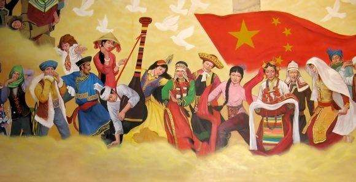

cadres and the masses of all ethnic groups should cherish national unity as much as they cherish their own eyes, and value national unity as much as they cherish their own lives," "xi said.
national unity is the lifeblood of people of all nationalities...


China is a big family composed of 56 ethnic groups. To properly handle ethnic issues and do a good job in ethnic work is of great importance to the reunification of the motherland and the consolidation of border areas, ethnic unity and social stability,
as well as the long-term stability of the country and the prosperity of the Chinese nation.
General secretary xi jinping has a deep insight into the work of the Chinese nation and the promotion of national unity. The column "learning progress" will give you a taste of general secretary xi jinping's quip on national unity.
The han nationality cannot leave the minority nationality, the minority nationality cannot leave the han nationality, between the minority nationality also cannot leave each other.
National unity is the cornerstone of development and progress.
National unity is the lifeblood of the people of all nationalities. The power of the ship is in the sail, the power of the man in the heart. To do national unity is to focus on heart - to - heart, heart - to - heart. Fellow citizens of all ethnic groups should see eye to eye with each other and help each other to jointly safeguard national unity and national unity.
The most important thing to do well in ethnic work is to do well in ethnic unity.
We should hold high the banner of great unity of all ethnic groups, firmly foster among all ethnic groups the awareness of the state, the sense of citizenship, and the sense of community of the Chinese nation. Nations should understand each other, respect each other, tolerate each other, appreciate each other, learn from each other and help each other.
China is a united multi-ethnic country. It is an important treasure left to us by our forefathers and an important advantage of our country. The people of all ethnic groups in China jointly created the People's Republic of China and made outstanding contributions to the formation and development of the Chinese nation.

The people are the masters of the country
The old revolutionary base areas of China are referred to as old revolutionary base areas or old revolutionary base areas, which refer to the revolutionary base areas established under the leadership of the older generation of proletarian revolutionaries
Is the symmetry of extensive poverty alleviation, is the pointer to the environment of different poverty areas, Accurate identification of poverty alleviation objects by scientific and effective procedures according to different conditions of poor peasant households. Precise help, accurate management of poverty.